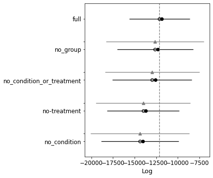
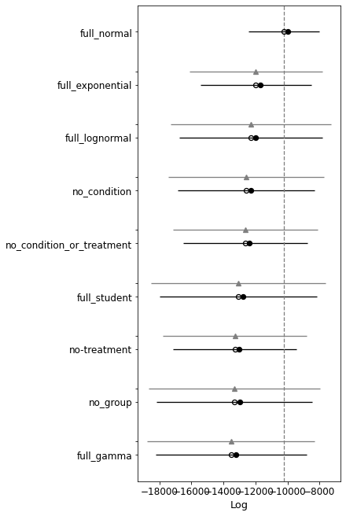
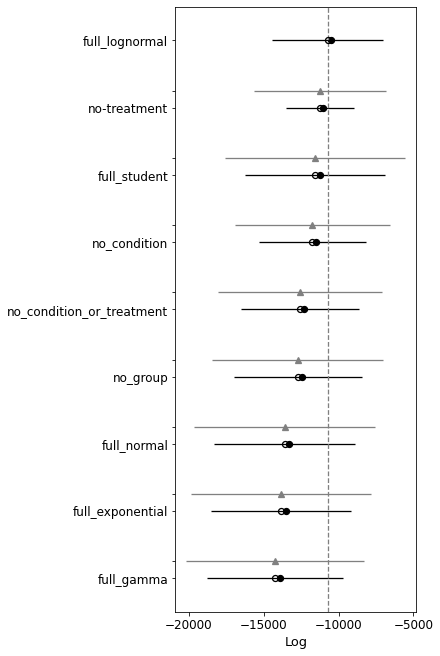

LFP example with stim strength
Contents
LFP example with stim strength¶
import numpy as np
import pandas as pd
from bayes_window import BayesWindow, BayesRegression
from bayes_window.generative_models import generate_fake_lfp
ISI¶
df = []
for slope in np.linspace(4, 40, 4):
df1 = generate_fake_lfp(mouse_response_slope=slope)[0]
df1['stim_strength'] = slope
df.append(df1)
df = pd.concat(df)
BayesWindow(df=df, y='isi', treatment='stim_strength', group='mouse', detail='i_trial').data_box_detail()
window = BayesRegression(df=df, y='isi', treatment='stim_strength', group='mouse', detail='i_trial')
window.fit(add_group_slope=False, dist_y='gamma')
window.chart
2021-11-25 00:46:44.594661: E external/org_tensorflow/tensorflow/stream_executor/cuda/cuda_driver.cc:271] failed call to cuInit: CUDA_ERROR_COMPAT_NOT_SUPPORTED_ON_DEVICE: forward compatibility was attempted on non supported HW
2021-11-25 00:46:44.594794: E external/org_tensorflow/tensorflow/stream_executor/cuda/cuda_diagnostics.cc:313] kernel version 450.142.0 does not match DSO version 450.156.0 -- cannot find working devices in this configuration
window.explore_model_kinds()
2021-11-25 00:47:09.717646: E external/org_tensorflow/tensorflow/stream_executor/cuda/cuda_driver.cc:271] failed call to cuInit: CUDA_ERROR_COMPAT_NOT_SUPPORTED_ON_DEVICE: forward compatibility was attempted on non supported HW
2021-11-25 00:47:09.717775: E external/org_tensorflow/tensorflow/stream_executor/cuda/cuda_diagnostics.cc:313] kernel version 450.142.0 does not match DSO version 450.156.0 -- cannot find working devices in this configuration
2021-11-25 00:47:09.737275: E external/org_tensorflow/tensorflow/stream_executor/cuda/cuda_driver.cc:271] failed call to cuInit: CUDA_ERROR_COMPAT_NOT_SUPPORTED_ON_DEVICE: forward compatibility was attempted on non supported HW
2021-11-25 00:47:09.737392: E external/org_tensorflow/tensorflow/stream_executor/cuda/cuda_diagnostics.cc:313] kernel version 450.142.0 does not match DSO version 450.156.0 -- cannot find working devices in this configuration
2021-11-25 00:47:09.767904: E external/org_tensorflow/tensorflow/stream_executor/cuda/cuda_driver.cc:271] failed call to cuInit: CUDA_ERROR_COMPAT_NOT_SUPPORTED_ON_DEVICE: forward compatibility was attempted on non supported HW
2021-11-25 00:47:09.768150: E external/org_tensorflow/tensorflow/stream_executor/cuda/cuda_diagnostics.cc:313] kernel version 450.142.0 does not match DSO version 450.156.0 -- cannot find working devices in this configuration
2021-11-25 00:47:09.788620: E external/org_tensorflow/tensorflow/stream_executor/cuda/cuda_driver.cc:271] failed call to cuInit: CUDA_ERROR_COMPAT_NOT_SUPPORTED_ON_DEVICE: forward compatibility was attempted on non supported HW
2021-11-25 00:47:09.788826: E external/org_tensorflow/tensorflow/stream_executor/cuda/cuda_diagnostics.cc:313] kernel version 450.142.0 does not match DSO version 450.156.0 -- cannot find working devices in this configuration
2021-11-25 00:47:09.870541: E external/org_tensorflow/tensorflow/stream_executor/cuda/cuda_driver.cc:271] failed call to cuInit: CUDA_ERROR_COMPAT_NOT_SUPPORTED_ON_DEVICE: forward compatibility was attempted on non supported HW
2021-11-25 00:47:09.870755: E external/org_tensorflow/tensorflow/stream_executor/cuda/cuda_diagnostics.cc:313] kernel version 450.142.0 does not match DSO version 450.156.0 -- cannot find working devices in this configuration
2021-11-25 00:47:09.897718: E external/org_tensorflow/tensorflow/stream_executor/cuda/cuda_driver.cc:271] failed call to cuInit: CUDA_ERROR_COMPAT_NOT_SUPPORTED_ON_DEVICE: forward compatibility was attempted on non supported HW
2021-11-25 00:47:09.898057: E external/org_tensorflow/tensorflow/stream_executor/cuda/cuda_diagnostics.cc:313] kernel version 450.142.0 does not match DSO version 450.156.0 -- cannot find working devices in this configuration
| rank | loo | p_loo | d_loo | weight | se | dse | warning | loo_scale | |
|---|---|---|---|---|---|---|---|---|---|
| full | 0 | 957.109571 | 10.527250 | 0.000000 | 5.169688e-01 | 16.663694 | 0.000000 | False | log |
| with_group_slope | 1 | 953.827211 | 10.517792 | 3.282360 | 4.830312e-01 | 17.223892 | 23.696021 | False | log |
| no_condition_or_treatment | 2 | 859.699623 | 2.210565 | 97.409948 | 2.226661e-12 | 13.507863 | 21.519765 | False | log |
| no-treatment | 3 | 837.578112 | 2.693797 | 119.531459 | 2.001224e-12 | 16.657997 | 23.853702 | False | log |
| no_condition | 4 | 610.737820 | 1.345623 | 346.371751 | 5.833920e-10 | 11.858669 | 20.847029 | False | log |
| no_group | 5 | 601.619558 | 1.479228 | 355.490012 | 2.189432e-09 | 12.999723 | 21.032043 | False | log |
## Power
Power¶
df = []
for slope in np.linspace(4, 400, 4):
df1 = generate_fake_lfp(mouse_response_slope=slope)[0]
df1['stim_strength'] = slope
df.append(df1)
df = pd.concat(df)
BayesWindow(df=df, y='Power', treatment='stim_strength', group='mouse', detail='i_trial').data_box_detail()
window = BayesRegression(df=df, y='Power', treatment='stim_strength', group='mouse', detail='i_trial')
window.fit(add_group_slope=False, dist_y='gamma')
window.chart
window = BayesRegression(df=df, y='Power', treatment='stim_strength', condition='mouse', detail='i_trial')
window.fit(add_condition_slope=True, center_intercept=True, dist_y='gamma')
window.chart
window.explore_model_kinds()

| rank | loo | p_loo | d_loo | weight | se | dse | warning | loo_scale | |
|---|---|---|---|---|---|---|---|---|---|
| full | 0 | -12111.778399 | 283.021364 | 0.000000 | 0.274109 | 3507.067672 | 0.000000 | True | log |
| no_group | 1 | -12615.062101 | 304.557190 | 503.283703 | 0.328859 | 4405.535506 | 5669.069385 | True | log |
| no_condition_or_treatment | 2 | -12951.231154 | 368.537625 | 839.452756 | 0.091923 | 4601.191625 | 5465.029517 | True | log |
| no-treatment | 3 | -14015.247972 | 301.196481 | 1903.469573 | 0.037434 | 4174.296968 | 5493.847810 | True | log |
| no_condition | 4 | -14383.544768 | 321.229608 | 2271.766370 | 0.267676 | 4513.811367 | 5719.102423 | True | log |
window.explore_models()
2021-11-25 00:48:32.857536: E external/org_tensorflow/tensorflow/stream_executor/cuda/cuda_driver.cc:271] failed call to cuInit: CUDA_ERROR_COMPAT_NOT_SUPPORTED_ON_DEVICE: forward compatibility was attempted on non supported HW
2021-11-25 00:48:32.857887: E external/org_tensorflow/tensorflow/stream_executor/cuda/cuda_diagnostics.cc:313] kernel version 450.142.0 does not match DSO version 450.156.0 -- cannot find working devices in this configuration
2021-11-25 00:48:32.873960: E external/org_tensorflow/tensorflow/stream_executor/cuda/cuda_driver.cc:271] failed call to cuInit: CUDA_ERROR_COMPAT_NOT_SUPPORTED_ON_DEVICE: forward compatibility was attempted on non supported HW
2021-11-25 00:48:32.874343: E external/org_tensorflow/tensorflow/stream_executor/cuda/cuda_diagnostics.cc:313] kernel version 450.142.0 does not match DSO version 450.156.0 -- cannot find working devices in this configuration
2021-11-25 00:48:32.894288: E external/org_tensorflow/tensorflow/stream_executor/cuda/cuda_driver.cc:271] failed call to cuInit: CUDA_ERROR_COMPAT_NOT_SUPPORTED_ON_DEVICE: forward compatibility was attempted on non supported HW
2021-11-25 00:48:32.894588: E external/org_tensorflow/tensorflow/stream_executor/cuda/cuda_diagnostics.cc:313] kernel version 450.142.0 does not match DSO version 450.156.0 -- cannot find working devices in this configuration
2021-11-25 00:48:32.922420: E external/org_tensorflow/tensorflow/stream_executor/cuda/cuda_driver.cc:271] failed call to cuInit: CUDA_ERROR_COMPAT_NOT_SUPPORTED_ON_DEVICE: forward compatibility was attempted on non supported HW
2021-11-25 00:48:32.922573: E external/org_tensorflow/tensorflow/stream_executor/cuda/cuda_diagnostics.cc:313] kernel version 450.142.0 does not match DSO version 450.156.0 -- cannot find working devices in this configuration
2021-11-25 00:48:32.934746: E external/org_tensorflow/tensorflow/stream_executor/cuda/cuda_driver.cc:271] failed call to cuInit: CUDA_ERROR_COMPAT_NOT_SUPPORTED_ON_DEVICE: forward compatibility was attempted on non supported HW
2021-11-25 00:48:32.934994: E external/org_tensorflow/tensorflow/stream_executor/cuda/cuda_diagnostics.cc:313] kernel version 450.142.0 does not match DSO version 450.156.0 -- cannot find working devices in this configuration
2021-11-25 00:48:32.950901: E external/org_tensorflow/tensorflow/stream_executor/cuda/cuda_driver.cc:271] failed call to cuInit: CUDA_ERROR_COMPAT_NOT_SUPPORTED_ON_DEVICE: forward compatibility was attempted on non supported HW
2021-11-25 00:48:32.951208: E external/org_tensorflow/tensorflow/stream_executor/cuda/cuda_diagnostics.cc:313] kernel version 450.142.0 does not match DSO version 450.156.0 -- cannot find working devices in this configuration
2021-11-25 00:48:32.961889: E external/org_tensorflow/tensorflow/stream_executor/cuda/cuda_driver.cc:271] failed call to cuInit: CUDA_ERROR_COMPAT_NOT_SUPPORTED_ON_DEVICE: forward compatibility was attempted on non supported HW
2021-11-25 00:48:32.962160: E external/org_tensorflow/tensorflow/stream_executor/cuda/cuda_diagnostics.cc:313] kernel version 450.142.0 does not match DSO version 450.156.0 -- cannot find working devices in this configuration
2021-11-25 00:48:33.019686: E external/org_tensorflow/tensorflow/stream_executor/cuda/cuda_driver.cc:271] failed call to cuInit: CUDA_ERROR_COMPAT_NOT_SUPPORTED_ON_DEVICE: forward compatibility was attempted on non supported HW
2021-11-25 00:48:33.020187: E external/org_tensorflow/tensorflow/stream_executor/cuda/cuda_diagnostics.cc:313] kernel version 450.142.0 does not match DSO version 450.156.0 -- cannot find working devices in this configuration
2021-11-25 00:48:33.087214: E external/org_tensorflow/tensorflow/stream_executor/cuda/cuda_driver.cc:271] failed call to cuInit: CUDA_ERROR_COMPAT_NOT_SUPPORTED_ON_DEVICE: forward compatibility was attempted on non supported HW
2021-11-25 00:48:33.087583: E external/org_tensorflow/tensorflow/stream_executor/cuda/cuda_diagnostics.cc:313] kernel version 450.142.0 does not match DSO version 450.156.0 -- cannot find working devices in this configuration
| rank | loo | p_loo | d_loo | weight | se | dse | warning | loo_scale | |
|---|---|---|---|---|---|---|---|---|---|
| no_condition | 0 | -8289.694943 | 147.816533 | 0.000000 | 1.006347e-01 | 1378.627496 | 0.000000 | True | log |
| full_student | 1 | -8545.500428 | 173.390078 | 255.805485 | 1.400096e-01 | 1739.770196 | 2073.181206 | True | log |
| no_group | 2 | -11268.591969 | 284.091967 | 2978.897026 | 1.507770e-01 | 3712.007193 | 3790.346729 | True | log |
| full_lognormal | 3 | -11662.197538 | 261.320583 | 3372.502595 | 1.176425e-01 | 3585.636485 | 3858.232447 | True | log |
| full_exponential | 4 | -12024.095847 | 294.289902 | 3734.400904 | 1.625927e-01 | 4570.422497 | 4802.675230 | True | log |
| no-treatment | 5 | -12433.344654 | 279.543061 | 4143.649711 | 1.530207e-09 | 4134.476531 | 4345.039428 | True | log |
| full_normal | 6 | -12450.589055 | 295.967154 | 4160.894112 | 1.776581e-01 | 3532.577508 | 3829.304333 | True | log |
| full_gamma | 7 | -12847.607586 | 301.372639 | 4557.912642 | 1.506853e-01 | 4210.343161 | 4445.931274 | True | log |
| no_condition_or_treatment | 8 | -13469.297733 | 275.804079 | 5179.602790 | 8.640693e-09 | 3757.208806 | 3984.810518 | True | log |
window.explore_models()

| rank | loo | p_loo | d_loo | weight | se | dse | warning | loo_scale | |
|---|---|---|---|---|---|---|---|---|---|
| full_normal | 0 | -10211.274442 | 252.095436 | 0.000000 | 1.315825e-01 | 2214.046249 | 0.000000 | True | log |
| full_exponential | 1 | -11970.643635 | 260.054427 | 1759.369193 | 1.532412e-01 | 3467.112823 | 4152.979393 | True | log |
| full_lognormal | 2 | -12280.363310 | 300.163590 | 2069.088868 | 1.717863e-01 | 4484.996676 | 5026.269130 | True | log |
| no_condition | 3 | -12565.531725 | 285.380714 | 2354.257283 | 1.120088e-01 | 4279.807690 | 4860.159189 | True | log |
| no_condition_or_treatment | 4 | -12620.605886 | 257.747081 | 2409.331444 | 0.000000e+00 | 3872.869693 | 4500.709666 | True | log |
| full_student | 5 | -13068.353294 | 308.668437 | 2857.078853 | 1.931502e-01 | 4911.114880 | 5427.734018 | True | log |
| no-treatment | 6 | -13289.359919 | 281.177788 | 3078.085477 | 1.613379e-10 | 3849.001434 | 4489.810047 | True | log |
| no_group | 7 | -13307.750130 | 327.109248 | 3096.475688 | 1.458465e-01 | 4841.355106 | 5360.247252 | True | log |
| full_gamma | 8 | -13522.965029 | 320.136366 | 3311.690587 | 9.238446e-02 | 4715.178692 | 5236.474994 | True | log |
window.explore_models()

| rank | loo | p_loo | d_loo | weight | se | dse | warning | loo_scale | |
|---|---|---|---|---|---|---|---|---|---|
| full_lognormal | 0 | -10731.385109 | 246.188663 | 0.000000 | 0.137689 | 3727.164974 | 0.000000 | True | log |
| no-treatment | 1 | -11233.580184 | 225.185809 | 502.195075 | 0.000000 | 2245.515995 | 4388.521114 | True | log |
| full_student | 2 | -11545.962507 | 285.218897 | 814.577398 | 0.201628 | 4671.401078 | 6006.414544 | True | log |
| no_condition | 3 | -11750.086064 | 264.240630 | 1018.700955 | 0.107708 | 3553.240363 | 5181.490338 | True | log |
| no_condition_or_treatment | 4 | -12568.029009 | 274.695111 | 1836.643900 | 0.000000 | 3968.712300 | 5457.662692 | True | log |
| no_group | 5 | -12723.556342 | 301.131566 | 1992.171233 | 0.098016 | 4284.948613 | 5702.899784 | True | log |
| full_normal | 6 | -13603.098905 | 313.673008 | 2871.713796 | 0.196802 | 4698.387065 | 6032.166659 | True | log |
| full_exponential | 7 | -13832.135927 | 330.838000 | 3100.750818 | 0.144897 | 4647.905917 | 5999.864863 | True | log |
| full_gamma | 8 | -14231.030520 | 334.170222 | 3499.645411 | 0.113260 | 4558.426997 | 5932.945447 | True | log |